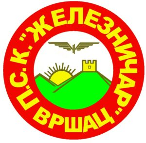
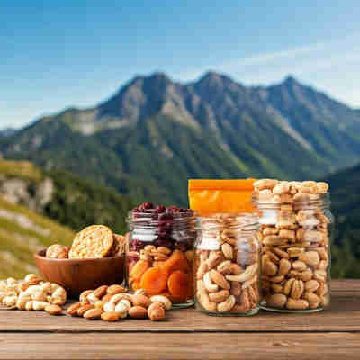

Mešavina orašastih plodova, sušenog voća i integralnih keksa je odličan izvor energije za planinarenje.
Lako se pakuje i pruža dugotrajan osećaj sitosti.
Sendvič za planinu: Savršen sendvič za planinarenje! Pun je zdravih sastojaka:
integralni hleb, meso, povrće i pruža dovoljno energije za uspon. Idealna kombinacija ukusa i nutrijenata.
Planinska salata: Sveža i lagana salata, bogata vitaminima i mineralima, idealna je za osveženje tokom planinarenja.
Orašasti plodovi dodaju dodatnu energiju, a povrće hidrira organizam.
VRŠAC WEATHER